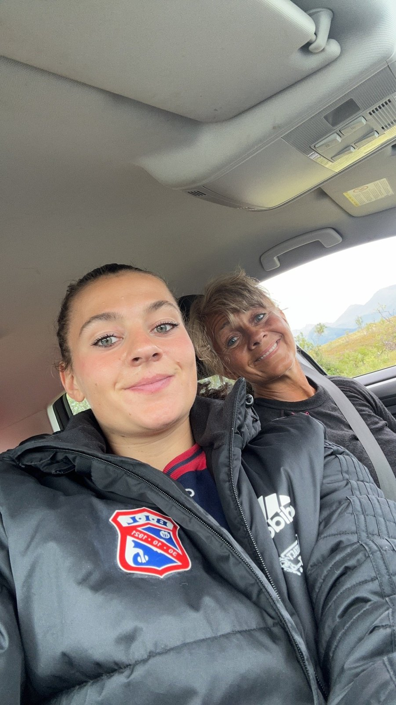
Jeg var ni år da NRK filmet meg for Energikampen. Siden har kroppen min vært gjennom alt. Røket korsbånd, ankel med metall, midlertidig hjerneskade, seks klubber og fem steder fra Bærum til Myre. Nå bokser jeg.I was nine when NRK filmed me for Energikampen. Since then my body has been through it all. Torn ACL, ankle full of metal, temporary brain injury, six clubs and five cities from Bærum to Myre. Now I box.
not here to be pretty. here to be dangerous.
Dette er uke en.This is week one.
brettet.the tray.
Jeg står opp 05:45. Hjernen min fungerer ikke klokka seks om morgenen. Det er hele poenget.I wake up at 05:45. My brain doesn't work at six in the morning. That's the point.
Brettet er et system for en hjerne som ikke kan ta beslutninger før klokka ni. Alt ordnes klart på morgenen. To bokser med supplementer, kreatin, frosne bær, varmt vann med Baja Gold havsalt, hydrogenvann. Hele greia på et brett. Brettet går med meg til badet. Morgenrutinen skjer der, ikke på kjøkkenet.The tray is a system for a brain that can't make decisions before nine. Everything laid out the night before. Two tins of supplements, creatine, frozen berries, warm water with Baja Gold sea salt, hydrogen water. All on one tray. The tray comes with me to the bathroom. Morning protocol happens there, not in the kitchen.
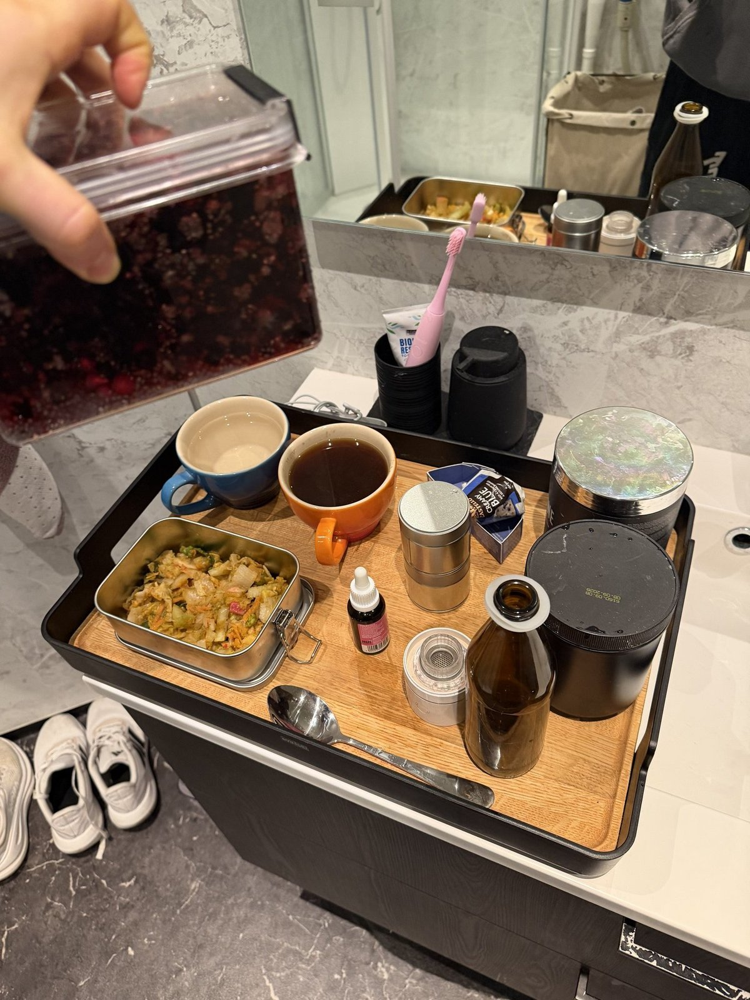
Før dette var morgenene mine kaos. Stå opp, stirre i veggen, scrolle telefonen i 40 minutter, glemme å spise, ta supplementer klokka to på ettermiddagen. Eller aldri. ADHD-hjernen min brukte all sin energi på å bestemme hva den skulle gjøre. Og svaret var som regel: ingenting.Before this, mornings were chaos. Wake up, stare at the wall, scroll for 40 minutes, forget to eat, take supplements at two in the afternoon. Or never. My ADHD brain burned all its energy deciding what to do. The answer was usually: nothing.
Brettet fjernet alt det.The tray removed all of that.
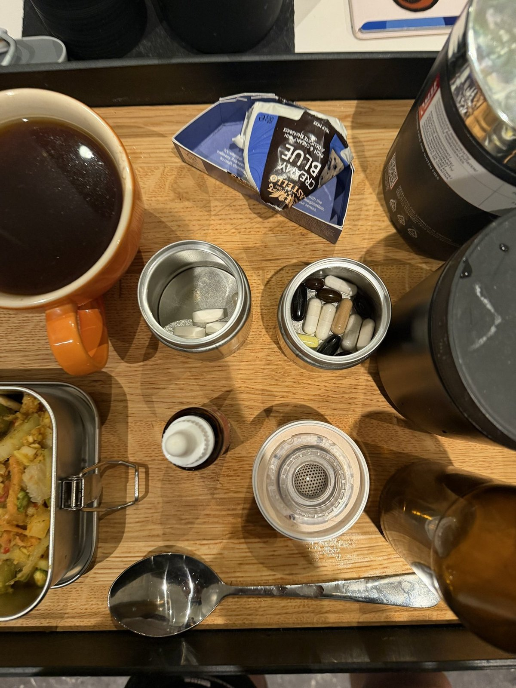
Nå er morgenene mine identiske. Ikke fordi jeg er disiplinert. Fordi jeg fjernet behovet for disiplin. Det er et brett. Du bærer det. Ferdig.Now every morning is identical. Not because I'm disciplined. Because I removed the need for discipline. It's a tray. You carry it. Done.
Bryan Johnson bruker Blueprint til å reversere aldring. Hele systemet hans bygger på ett prinsipp: fjern valg, gjør det automatisk. Jeg bygger mitt eget system. Mye mindre skala, men samme logikk. Start med det som faktisk ødelegger dagen din, og fiks det.Bryan Johnson uses Blueprint to reverse aging. His entire system runs on one principle: remove choices, make it automatic. I'm building my own version. Much smaller scale, same logic. Start with the thing that actually ruins your day, and fix it.
For meg var det morgenen. Så jeg begynte der.For me, that was the morning. So I started there.
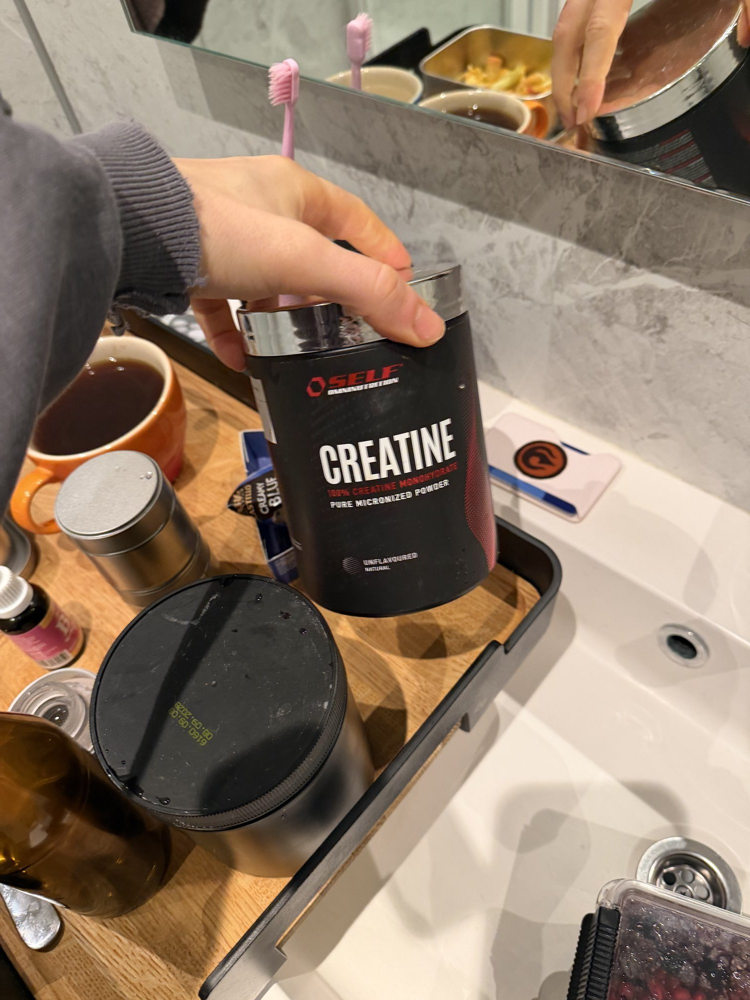
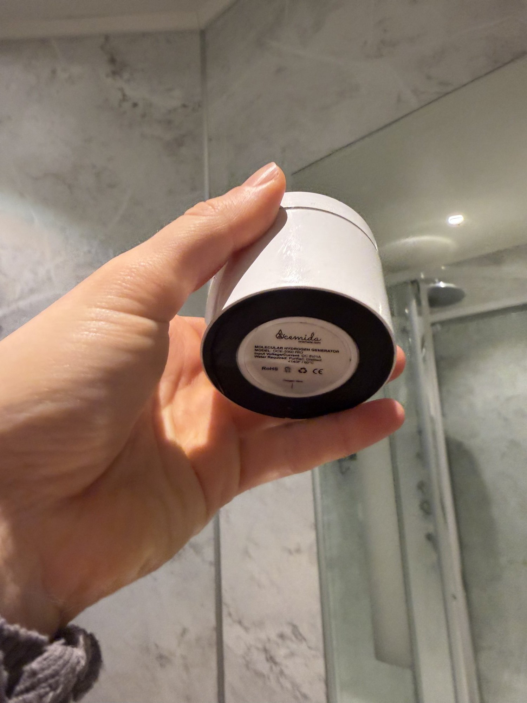
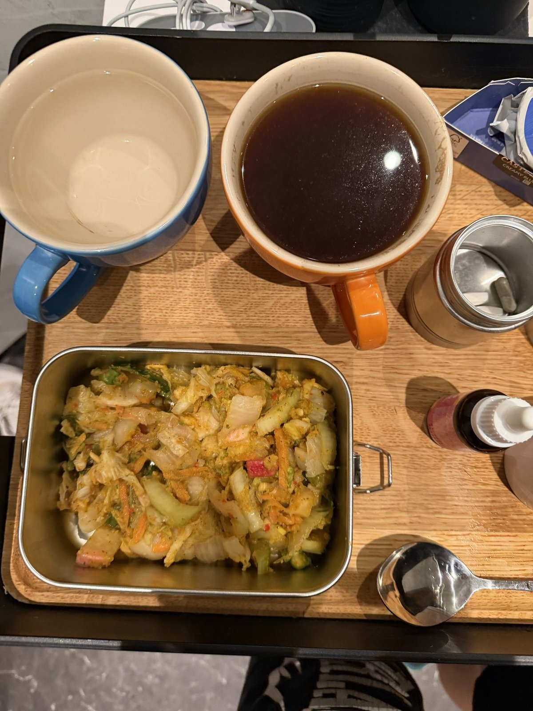
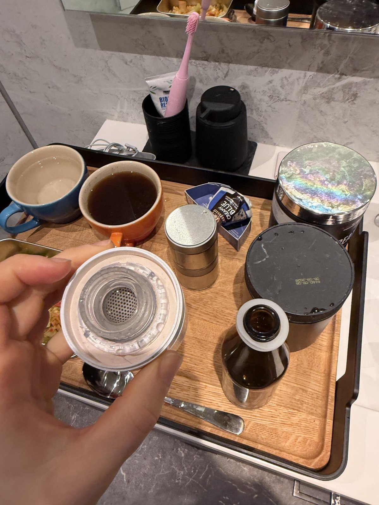
supplementer.supplements.
Stacken er ikke ferdig. Det er viktig å si.The stack isn't finished. That matters.
Jeg tar supplementer som en del av morgenprotokollen. Noen er låst. Resten er research. Jeg leser, jeg tester, jeg justerer. Blodprøvene er ikke tatt ennå. Fastlegen sjekker mulighetene. Så akkurat nå er dette basert på lesing, ikke data. Når biomarkørene kommer, endrer stacken seg. Kanskje drastisk.Supplements are part of the morning protocol. Some are locked in. The rest is research. I read, I test, I adjust. Blood work hasn't been done yet. Working with my doctor on options. So right now this is based on reading, not data. When the biomarkers come back, the stack changes. Maybe drastically.
Jeg publiserer den fulle protokollen når den faktisk er basert på noe mer enn Google og optimisme.I'll publish the full protocol when it's based on something more than Google and optimism.
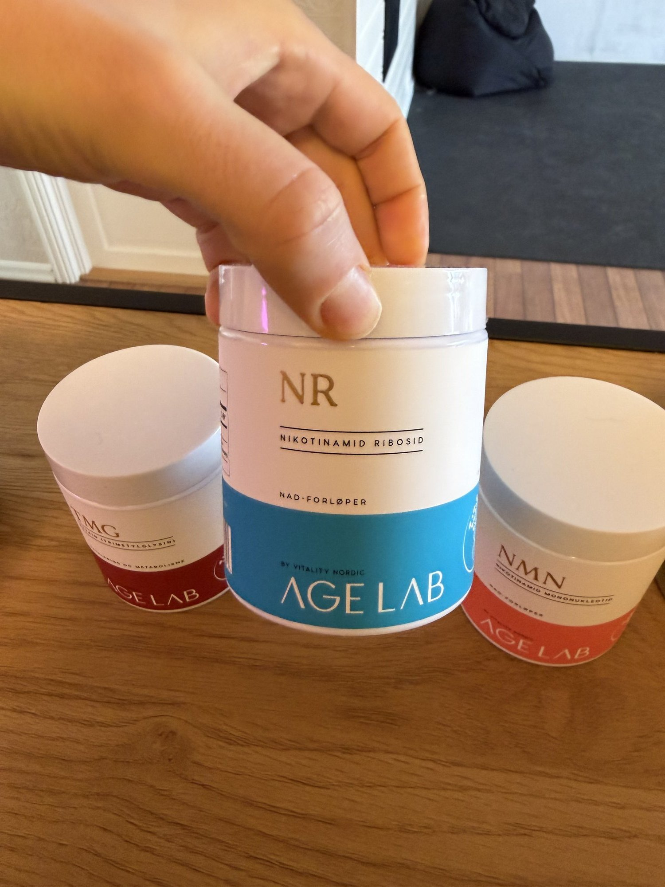
rommet.the room.
NextElite. Myre, Vesterålen. Det er ikke et fancy gym. Det er et rom med sekker, hansker og folk som møter opp.NextElite. Myre, Vesterålen. Not a fancy gym. A room with bags, gloves, and people who show up.
Jeg bokser. Ikke fordi det er trendy. Fordi det er det eneste som får ADHD-hjernen min til å bli stille. Når noen kaster slag mot deg, tenker du ikke på e-post.I box. Not because it's trendy. Because it's the only thing that makes my ADHD brain go quiet. When someone throws a punch at you, you don't think about email.
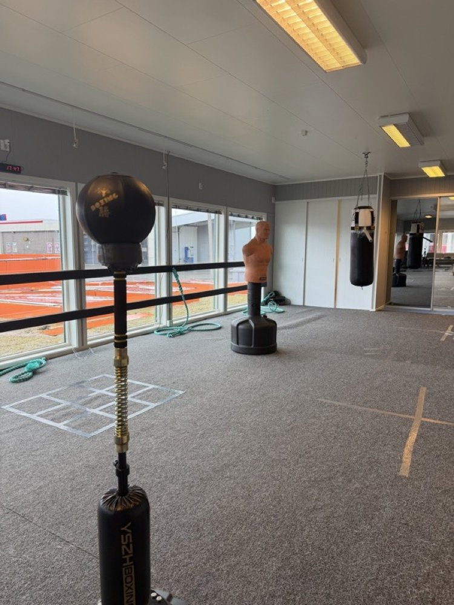
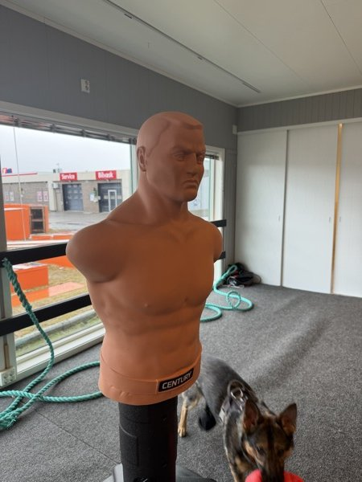
Treningssenteret her er ikke Instagram-vennlig. Det er kaldt, det er enkelt, det fungerer. Det er folk som trener fordi de vil bli bedre, ikke fordi de vil legge det ut. Det passer meg.The gym here isn't Instagram-friendly. Cold, simple, works. People train because they want to get better, not because they want to post it. My kind of place.
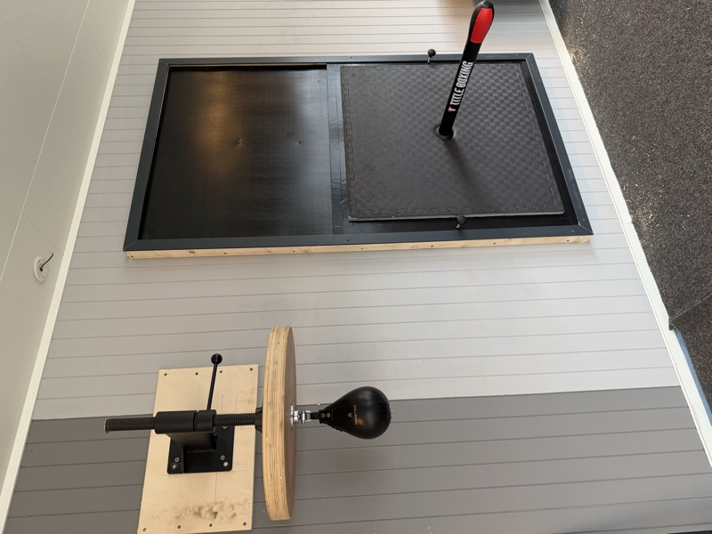
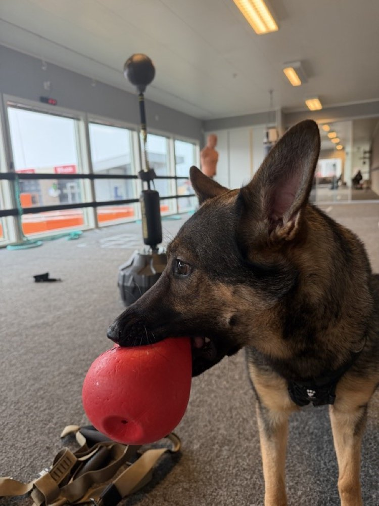
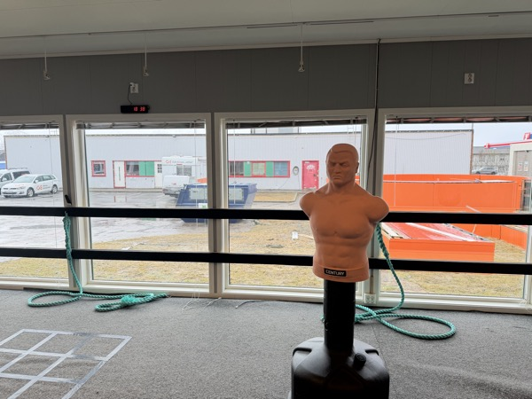
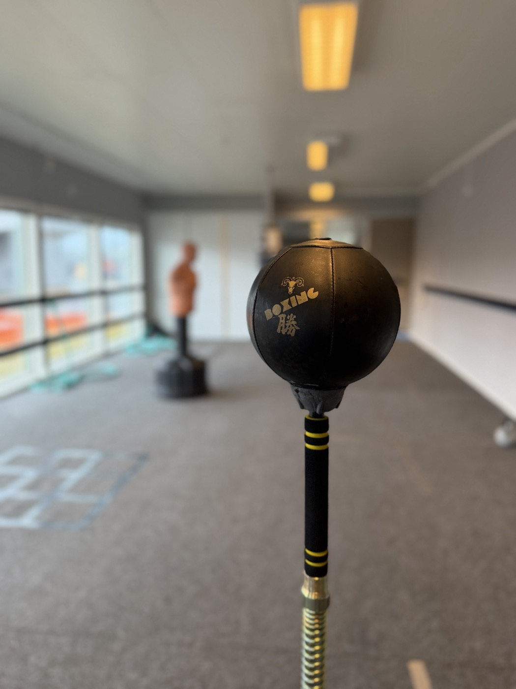
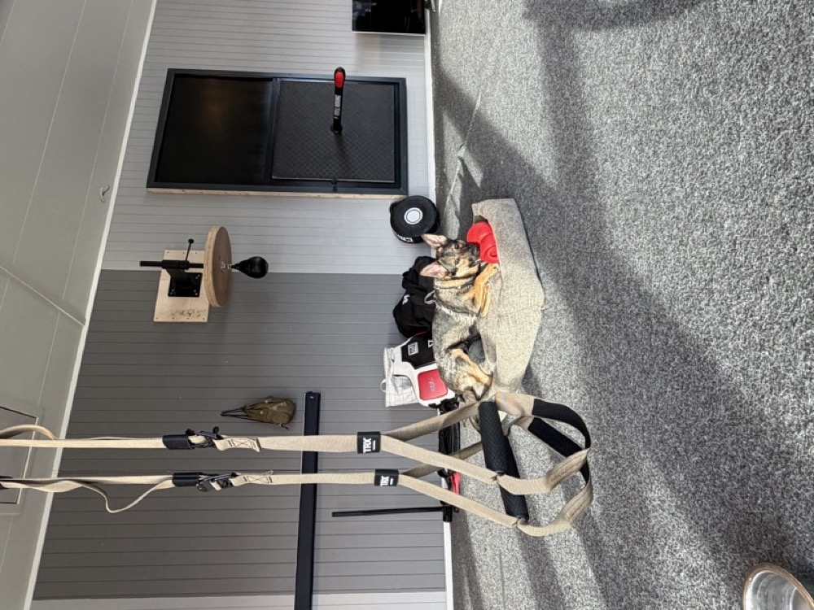
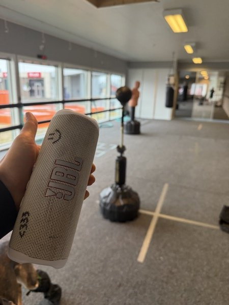
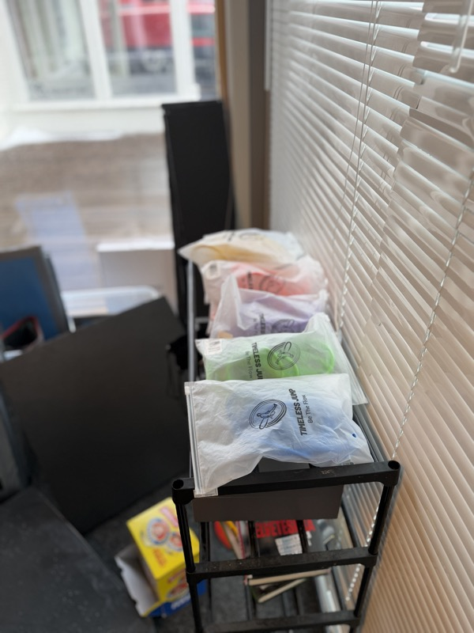
kriger.
Kriger er hunden min. Schæfer. Hun er i recovery etter operasjon. 6-12 uker. Hun burde hvile. Hun vet det ikke selv.Kriger is my dog. German Shepherd. Recovering from surgery. 6-12 weeks. She should be resting. She doesn't know that.
Denne uka lå hun i buret sitt og så på meg bokse til en coach på laptopen. Fra buret sitt. Som om det var hennes egen kamp.This week she lay in her crate watching me box along to a coach on the laptop. From inside the crate. Like it was her fight too.
Blue er den andre hunden vår. Også schæfer, eldre enn Kriger. Hun er den som beskytter flokken.Blue is our other dog. Also a Shepherd, older than Kriger. She's the one who guards the pack.
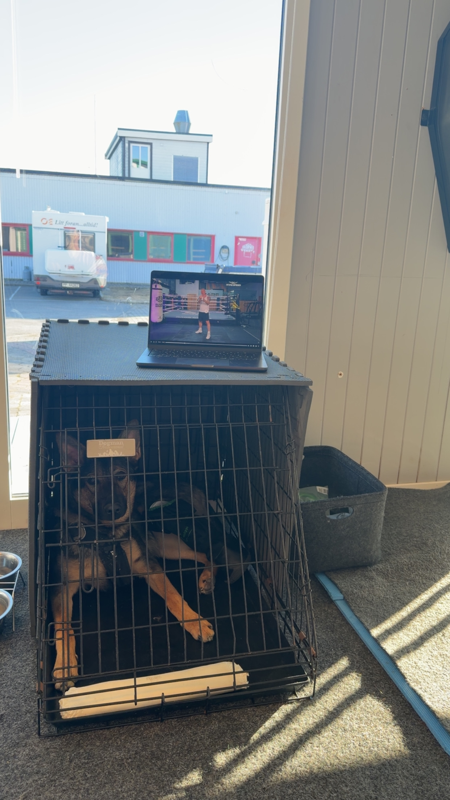
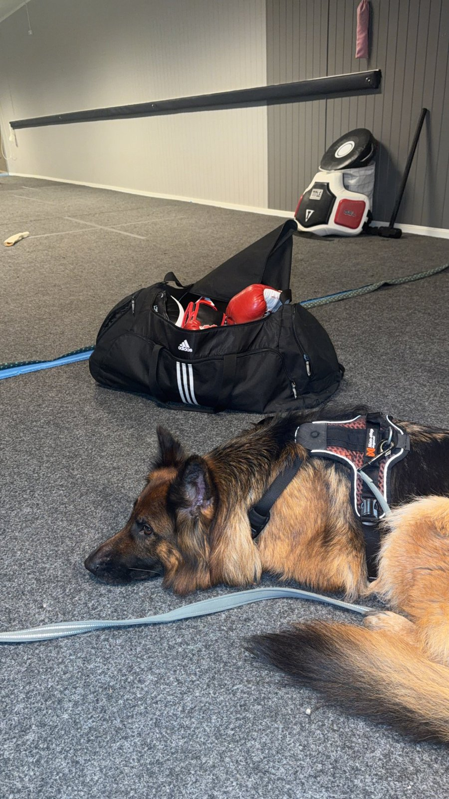
veien videre.the road ahead.
Uke en er dokumentert. Det meste er halvveis. Brettet fungerer. Supplementene er uferdig. Blodprøvene venter. Boksingen er det eneste som sitter hundre prosent.Week one is documented. Most of it is halfway there. The tray works. Supplements are unfinished. Blood work is pending. Boxing is the only thing that's fully locked in.
Neste uke: første samtale med fastlegen om blodprøver, protokollen justeres, treningsloggen starter. Og kanskje Kriger får gå en tur uten å dra i båndet.Next week: first doctor visit about blood work, protocol gets adjusted, training log starts. And maybe Kriger gets to walk without pulling the leash.
Dette er starten. Ikke produktet. Prosessen.This is the start. Not the product. The process.